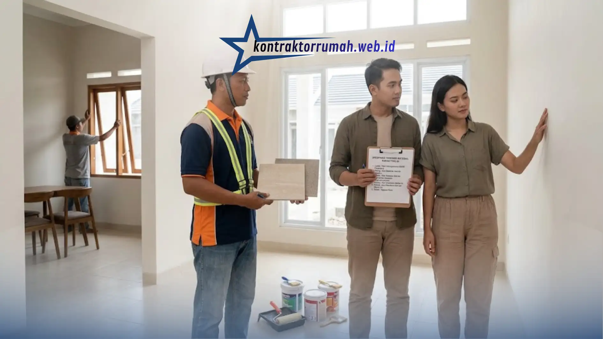

Rumah type 45 menjadi favorit banyak keluarga muda karena ukurannya pas tidak terlalu sempit untuk keluarga kecil dengan satu atau dua anak, namun juga tidak terlalu luas sehingga mudah dirawat dan hemat biaya perawatan jangka panjang.
Poin Penting
- Kontraktor profesional selalu transparan soal RAB & spesifikasi material, bukan sekadar "harga tembak".
- Cek portofolio proyek type 45 sebelumnya & minta kontak klien lama untuk verifikasi kualitas.
- Wajib ada surat perjanjian kerja tertulis: jadwal, spesifikasi, biaya, hingga masa garansi 3-6 bulan.
- Kontraktor yang baik komunikatif, solutif, dan proaktif memberi laporan progres.
- Pastikan legalitas badan usaha (CV/PT) & kejelasan pengawas lapangan harian.
Namun, kenyamanan itu hanya bisa didapat jika Anda menemukan jasa bangun rumah type 45 yang benar-benar tepat. Salah pilih kontraktor, hasil bangunan bisa jauh dari harapan meski budget sudah keluar penuh bahkan berisiko menimbulkan biaya perbaikan tambahan di kemudian hari.
Kenapa Memilih Kontraktor yang Tepat Itu Krusial
Berbeda dengan membeli barang jadi, jasa konstruksi adalah proses kolaboratif yang berlangsung berbulan-bulan. Kesalahan kecil di awal seperti spesifikasi material yang tidak jelas atau jadwal kerja yang tidak realistis bisa berakumulasi menjadi masalah besar saat rumah sudah setengah jadi. Karena itu, penting mengenali ciri-ciri kontraktor profesional sebelum Anda menandatangani kesepakatan apa pun.
Transparansi Rincian Harga
Kontraktor yang baik tidak akan memberikan "harga tembak" secara asal, misalnya langsung menyebut angka Rp 300 juta tanpa penjelasan lebih lanjut. Mereka akan menjabarkan biaya per meter persegi atau menyertakan RAB yang jelas dan masuk akal, termasuk rincian jenis material yang akan digunakan (misalnya merek keramik, jenis atap, atau kualitas besi).
Transparansi ini penting agar Anda bisa membandingkan penawaran apple to apple antar kontraktor.
Portofolio dan Rekam Jejak yang Jelas
Minta foto-foto proyek yang pernah mereka kerjakan, khususnya untuk rumah berukuran serupa type 45. Perhatikan detail seperti kerapian finishing, kualitas pengecatan, dan kesesuaian desain dengan hasil akhir.
Bila perlu, minta kontak klien lama untuk memastikan kualitas kerja dan ketepatan waktu penyelesaian pengalaman klien sebelumnya sering kali jauh lebih jujur dibanding testimoni yang ditampilkan di brosur.

Memeriksa kerapian finishing dan kualitas material secara langsung membantu Anda menilai standar kerja kontraktor sebelum deal.
Ada Surat Perjanjian Kerja (Kontrak)
Jangan pernah memulai pembangunan hanya bermodal saling percaya, sekalipun kontraktor tersebut direkomendasikan kerabat dekat. Pastikan ada perjanjian tertulis yang memuat jadwal pengerjaan per tahap, spesifikasi material secara rinci, total biaya dan skema pembayaran, serta masa garansi (retensi) minimal 3-6 bulan setelah serah terima.
Kontrak ini menjadi pegangan hukum jika terjadi perselisihan di kemudian hari.
Komunikatif dan Solutif
Pilih pemborong yang enak diajak diskusi dan responsif terhadap pertanyaan. Mereka semestinya bisa memberi saran material atau desain alternatif yang sesuai dengan budget Anda tanpa menurunkan standar keamanan struktur bangunan. Kontraktor yang baik juga proaktif memberi laporan progres, bukan hanya menunggu Anda bertanya.
Legalitas dan Tim Kerja yang Jelas
Periksa apakah kontraktor memiliki badan usaha resmi (CV/PT) atau minimal identitas yang jelas dan dapat dilacak. Tanyakan juga siapa yang akan menjadi pengawas lapangan harian, karena Anda perlu tahu siapa yang bertanggung jawab langsung jika terjadi masalah teknis selama proses pembangunan.
Catatan dari tim Kontraktor Rumah: Memilih jasa bangun rumah type 45 ibarat mencari mitra kerja jangka panjang, bukan sekadar transaksi jual-beli jasa. Luangkan waktu lebih untuk riset di awal cek portofolio, minta kontrak tertulis, dan pastikan komunikasi berjalan lancar agar Anda bisa tidur tenang sepanjang proses pembangunan berlangsung.
FAQ Seputar Jasa Bangun Rumah Type 45
Sedang mencari jasa bangun rumah type 45 yang transparan dan bisa dipercaya? Konsultasikan kebutuhan proyek Anda bersama tim kami sekarang.